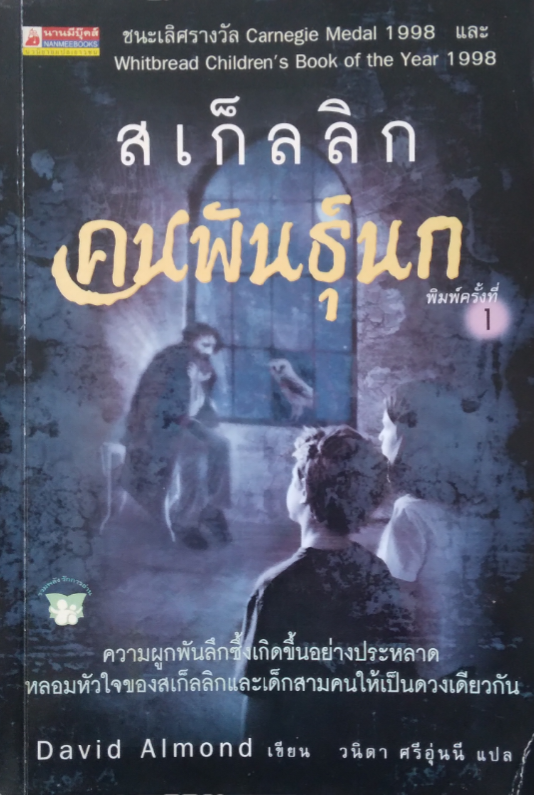
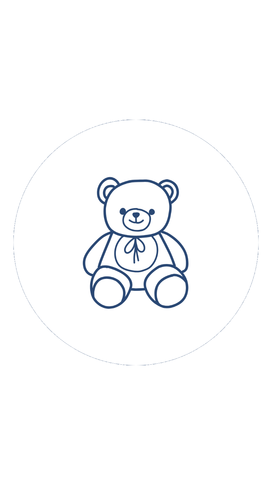

"ความผูกพันลึกซึ้งเกิดขึ้นอย่างประหลาด
หลอมรวมหัวใจของสเก็ลลิกและเด็กสามคนให้เป็นดวงเดียวกัน"

David Almond เขียน
วนิดา ศรีอุ่นนี แปล
ไมเคิลไม่รู้ว่าชายคนนี้เป็นใคร เขาอยู่ในโรงรถที่จวนจะพัง ตัวเลอะฝุ่น หยากใย่พันเต็ม ซากแมลงวันหัวเขียวเกาะติดตามตัว ราวกับว่าเขาอยู่ตรงนั้นมานานแสนนาน เขาอ่อนแรงจนเหมือนกำลังจะตาย
แต่แล้วเขากลับมีชีวิตขึ้นมาอีกครั้ง ปีกที่มีขนอ่อนนุ่มงอกออกมาจากกระดูกสะบัก
เขาบอกว่า เขาชื่อ สเก็ลลิก

- มุมเม้า หลังอ่าน -
ไม่ใช่เรื่องตื่นเต้นผจญภัย แต่เป็นเรื่องที่ชวนให้ติดตามอย่างระทึกใจตั้งแต่ต้นจบ ตั้งแต่หน้าแรกจนหน้าสุดท้าย ทุกคนที่อ่านน่าจะมีความรู้สึกอย่างเดียวกัน นั่นคือผูกพันกับสเก็ลลิก และเอาใจช่วยน้องสาวของไมเคิล รวมทั้งถอนหายใจอย่างโล่งอก และยิ้มอย่างมีความสุข เมื่อปิดหนังสือลง